strange music page
overseas * * * german electro
#ドイツプログレと地続きなんですけど、
ドイツのエレクトロ系と"Neue Deutsche Welle"(ノイエドイッチェヴェレ)ってヤツです、結局Conny Plank関係でひとくくりにできてしまうよーな気も。
ドイツ人っぽい極端な、変な感覚。音の感触が変わってるのはC.Plankだけのせいじゃなさそーです。
ノイバウテンはこっち
クラフトワークはこっち
あと外部リンク。(他にも有ったら教えてください)
|
- CLUSTER (KLUSTER)
- CLUSTER & ENO
- HARMONIA
- Tangerine Dream
- ASHRA
- Manuel Gottsching
- Holger Czukay
- MOEBIUS - PLANK
- MOEBIUS - PLANK - NEUMEIER
- MOEBIUS - PLANK - THOMPSON
- Holgar Hiller
- DAF
- DER PLAN
|
#新宿disk unionにて、\800でした。フツーの中古は同じ所で\1200でした、なんで足もとの箱だと値段が違うんでしょうかね、不思議なお店です。
"K"の方の(C.Schnitzlerが入ってる)クラスターのアルバムです。内容は.....Throbbing Gristleとか想像しちゃいました。年代的にはこっちのほうが古いんですけどね。1曲目はミュージックコンクレートみたいな音をバックにドイツ語の朗読、2曲目は音響実験みたいな感じかな？こっちは色々やってて結構聞いてて面白いかも。あとボーナストラックにClusterのライヴ(かな?)が収録されてました。(1999.3.28)
- Klopfzeichen Part 1
- Klopfzeichen Part 2
- Cluster & Farnbauer/Live at the Wiener Festwochen Alternativ 1980
- Conrad Schnitzler
- Dieter Moebius
- Hans-Joachim Roedelius
Hypnotic: CLP-9724-2 (original release 1970)
#電子実験音楽かな？なんだか音だけの世界で、フヨフヨした音とかが漂ってます。
"K"のクラスターよりは聴きやすくなってると思いますけど
SOWIESOSOみたいに何か表情のある音とは言いがたいかな？
なんだかギターの音とか、エレクトロっぽくない音とかがあちこちに残っている音は嫌いじゃないかも。
ただ完成度的には後のアルバムに比べるとイマイチなよーな気もします、ジャケは最高なんですが。(2001.8.27)
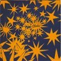
- PLAS (衝撃波)
- IM SUDEN (南国にて)
- FUR DIE KATZ (虚無空間)
- LIVE IN DER FABRIK
- GEORGEL
- NABITTE
- Dieter Moebius
- Hans-Joachim Roedelius
- Conny Plank
POLYDOR: POCP-2385 (original release 1972 - BRAIN RECORDS)
#弟からの借り物、ええと4枚目かな？このアルバムの4曲目がとても好きです。
「ピアノのリフレイン+テキトーなパーカッション+電子音+うめき声」てな短い曲なんですけど、だんだんテンション高まって行くような感じで。
その次の曲も奇麗なピアノに電子音がかぶさるような穏やかな曲、とてもいいです。
ノイズっぽいガシャガシャした音から無機質な音に移行する間なのかな？ 叙景的な感覚はこのアルバムが強いみたいです。(2001.9.1)
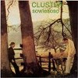
- SOWIESOSO
- HALWA
- DEM WANDERER
- UMLEITUNG
- ZUM WOHL
- ES WAR EINMAL
- IN EWIGKEIT
- Hans Joachim Roedelius
- Dieter Moebius
- Conny Plank
SKY RECORDS: SKY CD 3005 (original release 1976)
#ジャケも音も格好良すぎる一枚。
イーノとのコラボレーションの後で、SOWIESOSOの叙景的な音から「音」そのものへ関心がシフトする途中の感じがします。
2曲目とかは「ZERO SET」で見せた躍動感有るリズム＋変な電子音って感じで非常に楽しいです。
この作品からプロデューサーがConny PlankからTangerine DreamのPeter Baumannに変わってます。
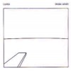
- Avanti
- Prothese
- Isodea
- Breitengrad 20 (緯度20°)
- Manchmal
- Grosses Wasser
produced by peter baumann & cluster
- Hans Joachim Roedelius
- Dieter Moebius
Gakken/PLATZ: PCLP-109 (origiral release 1979 - SKY RECORDS)
#なんとなくタワーレコードで購入。\2000でした。もっともっと無機質な音を想像していたんですが、思ってよりは曲っぽかったです。ポップスみたいなメロディーとかリズムは皆無なんですけど、微妙に盛りあがって行くのを感じます。
淡々とした音響の遠くから聞こえてくる、消え入りそうなメロディなんか、けっこーくるものがあるかも。
ちなみにこれが6枚目のアルバムで、このアルバム以降しばらくCLUSTERとしては活動をしてないみたいです。(1999.2.12)
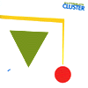
- OH ODESSA
- PROANTIPRO
- SELTSAME GEGEND
- HELLE MELANGE
- TRISTAN IN DER BAR
- CHARLIC
- UFER
- Hans-Joachim Roedelius
- Dieter Moebius
Gakken/PLATZ: PLCP-51 (original release 1981 - SKY RECORDS)
- Ho Renomo
- Schöne Hände
- Steinsame
- Für Luise
- Mit Simean
- Selange
- Die Bunge
- One
- Wermut
- Hans-Joachim Roedelius
- Dieter Moebius
- Brian Eno
- Holgar Czukay (on 1.)
- Okko Bekker (on 8.)
- Asmus Tietchens (on 8.)
Gakken/PLATZ: PLCP-105 (original release 1977 - SKY RECORDS)
#CLUSTER & ENO の2枚目。
SOWIESOSOと
GROSSES WASSERの間を繋ぐよーな感じなのかも。
どっちにしろ、CLUSTER&ENOの2枚は好きです。Enoのキモチワルイ声も結構はまってます。
体温低めのゆるいエレクトロといった感じかな？Roedeliusの幽かな叙情がイイです。(2002.8.15)
- Foreign Affairs
- The Belldog
- Base & Apex
- Tzima N'arki
- Luftschioß
- Oil
- Broken Hand
- Light Arms
- The Shade
- Old Land
- Hans-Joachim Roedelius
- Dieter Moebius
- Brian Eno
- Holgar Czukay (bass on 6.)
Gakken/PLATZ: PLCP-110 (original release 1978 - SKY RECORDS)
#府中街道沿いのdisk union(稲田堤だったけな?)にて、珍しく定価で購入\1800。HarmoniaはClusterの2人と元NeuのM.Rotherのバンドで割と何も考えてない電子音楽です。今聴くと人力テクノポップみたいで面白いです。4曲目とかすげー格好良いと思いました、何かに似てると思ったらBuffalo Daughterですね。というかBaffalo Daughterがこれに似てるのか。(1999.1.24)
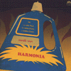
- watssi
- sehr kosmisch
- sonnenschein
- dino
- ohrwurm
- ahoi!
- veterano
- hausmusik
- Hans-Joachim Rodelius (organ,guitars,electric percussion)
- Dieter Moebius (synthesizers,guitars,electric percsssion)
- Michael Rother (guitars,organ,piano,elecric percussion)
- Conny Plank
POLYDOR: POCP-2387 (original release 1974 - BRAIN RECORDS)
#ええぇと、ほんとは1枚目の方が好きな、HARMONIAの2枚目。ちょと前作よりもCLUSTER色が強いような気もします。とても完成度高いドイツロックなんですけど、なんだかちょっと整理されすぎちゃってるような気がしてまして....ちなみにGURU GURUのMani Neumeierがdrumsで参加、Maniさんの方が上手なドラマーと思いますけど、この手のハンマービートはやっぱKlaus Dingerがイチバンなんだなぁと、思ってしまいました。
- De Luxe (immer sieder)
- Walky Talky
- Monza (rauf und runter)
- Notre Dame
- Gollum
- Kekse
- Michael Rother (guitars,keyboards,vocals)
- Hans-Joachim Roedelius (keyboards)
- Dieter Moebius (synthesizers,nagoja harp,vocals)
- Mani Neumeier (drums)
- Conny Plank
POLYDOR: POCP-2388 (original release 1975 - BRAIN RECORDS)
#ジャーマンロックのすべてと言っても良いほどの面子です。この後K.SchulzeはASH RA TEMPELへ行ってソロ活動へ、C.SchnitzlerはKlusterで2枚アルバムを作っています。
ただこのアルバム自体は全然エレクトロとかじゃなくて、3人でサイケ/ノイズなセッションをしているという時代を感じさせるモノ。
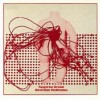
- Genesis (万物の創生)
- Journey Through A Burning Brain (冥想の河に伏して)
- Cold Smoke (冷えた煙)
- Ashes to Ashes (すべては灰に)
- Ressurection (復活)
- Edgar Frose (guitars)
- Conrad Schnitzler (organs)
- Klaus Schulze (drums)
RELATIVITY: 88651-8068-2 (original release 1970 - OHR)
#どーして、プログレの国内版ってこんなタイトルなんだろ...これはLPで買いました、たしか\1000くらいです。
なんか遠くから聞こえてくるような、鍾乳洞の奥で演奏してるような音が入ってます。深淵なる世界とか書けば良いのかな？でも、暗くして聴いてると吸い込まれそうな気分になるのも確か。
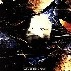
- atem (息)
- fauni-gena (牧羊神に捧げて)
- circulation of events (万物変化し、輪廻転生す)
- wahn (幻視)
- Edgar Frose (mellotron,guitars,organ,voice)
- Peter Baumann (organ,VCS3,synthesizers,piano)
- Chris Franke (organ,VCS3,synthesizers,percussions,voice)
#このアルバムではPOPOL VUHのF.Frankeがmoogで参加してます。基本的には前作と同じ路線ですが、前作よりも更に単調、しかもLP2枚各A面B面で1曲という構成。80分近くずーっと淡々と醒めた音がなってます。
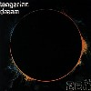
- birth of liquid plejades (輝けるプレアデスの誕生)
- nebulous dawn (めざめゆく未明の宇宙)
- origin of supernatural probabilities (超自然の起源)
- zeit (時)
- Edgar Frose (guitars,generator)
- Chris Franke (VCS3,cymbals,keyboards)
- Peter Baumann (VCS3,organ,vibraphone)
- Florian Fricke (moog synthesizer on 1.)
- Christian Vallbracht (cello)
- Johchen Von Grumbcow (cello)
- Hans Joachim Brune (cello)
- Johannes Lucke (cello)
RELATIVITY: 88561-8070-2 (original release 1972 - OHR)
#えーとこれもDisk Union渋谷でLPで\800。1976年発売で何枚目か知らないんですけど、なんか無調でスピリチュアルな世界からすこしずつシーケンサーとかを使い始める頃かも。アナログテクノというかチープな部分が面白いかも。いままでショワショワ言ってる所にいきなりあからさまなギターの音が入ってくる所とか。実はジャケ買い。(1999.2.12)
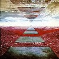
- stratosfear
- 3am at the border of the marsch from okefenokee
- Chris Franke (moog synthesizer,organ,percussions,loop mellotron,harpsichord)
- Edgar Frose (mellotron,moog synthesizer,guitars,piano,bass)
- Peter Baumann (moog synthesizer,electronic rhythm computer,piano,mellotron)
#ASHRA = M.Gottschingです。
下のやつの4年程前のアルバムみたいですね。
とりあえず1,3曲目が良いです、簡単なリズム入ってるだけで最近の音と変わらずに聴けます。他の曲はアンビエント色が強めで長すぎるんで、ちょっとつらいかな？ボーっと聴いてると気持ち良いんですけど。
Klaus Schulzeの交響曲っぽい雰囲気より中期Tangerine Dreamのけだるいセンスに近いよーな気もします、でもKRAFTWEKほどストイックでは無いです。それにしても音の起承転結がほとんど無い音楽です。ほんとに音だけの為の。
ちなみにこのCDも弟の持ち物。俺、CD買わなくても良いような気がしてきた。(2001.8.25)
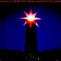
- SUNRAIN
- OCEAN OF TENDERNESS
- DEEP DISTANCE
- NIGHTDUST
VIRGIN RECORDS: CDV-2080 (original release 1977)
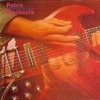
- 77 Slightly Delayed
- Midnight On Mars
- Don't Trust The Kids
- Blackouts
- Shuttle Cock
- Lotus Part I - IV
- Manuel Gottsching (guitars,keyboards,sequencer)
Spalax: CD14589 (original release 1977 - VIRGIN RECORDS)
#ASH RA TEMPELのM.Gottschingの1981のソロアルバムです。テクノ系でとても売れてたらしいですが、聴いてみてなるほどの完全なテクノアルバム。
やっぱAphexとかに通じるモノが有ります、シーケンスに乗せて微妙に変化してくパーカッションとかエコーとかギターとか。15年くらい早かったみたいですね。同時期のドイツの他のエレクトロ音楽からもかなり距離があるような最近の音に直結した音みたいです。とにかく59分間快楽系。(2001.3.23)
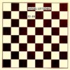
- RUHIGE NERVOSITAT
- GEMASSIGTER AUFBRUCH
- ...UND MITTELSPIEL
- ANSATZ
- DAMEN ELEGANZA
- EHRENVOLLER KAMPF
- HOHEIT WEICHT
- (NICHT OHNE SCHWUNG)
- ...UND SOUVERANITAT
- REMIS
- Manuel Gottsching (guitars,electronics)
SPALAX: 14241 (original release 1981)
#うわぁー、ダメそーなジャケット。
渋谷のQUATTROの上のWARSAWA RECORDの半額セールにて。
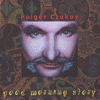
- invisible man
- good morning story
- dancing in wide circles
- world of the universe
- atlantis
- mirage
- Holger Czukay (guitars,bass,vocals,samples,synthesizers)
- Irmin Schmidt (samples on 4.)
- Jah Wabble (bass on 1.)
- Jaki Liebezeit (drums,percussions on 1.)(sampled drums on 2.3.4.)
- Michael Karoli (sampled guitars on 2.3.)
- Sheldon Ancel (vocals on 1.)
- Stefan Fischer (sampled hammond on 3.)
- u-she (vocals on 1.2.3.)
TONE CASUALTIES: TCCD-9944 (1999)
RASTAKRAUT PASTA
- News
- Rastakraut Pasta
- Feedback 66
- Missi Cacadou
- Two Oldtimers
- Solar Plexus
- Landebahn
MATERIAL
- Conditionierer
- Infiltration
- Tollkuhn
- Osmo-Fantor
- Nordostuches Gefuhl
- Dieter Moebius
- Conny Plank
- Holger Czukay (bass on 3-5.)
#完全に最近のテクノにしか聞こえないです、83年の録音とは思えない内容。CLUSTERとかHARMONIAとかが実験的な内容を含んでるとしたら、このアルバムはその成果といえるのかも。
最近のテクノみたいな音の作り方を、1983年なんて中途半端な時期に生ドラムで作ってるかと思うとほんとにヤバイ人達。例えばREPHLEXの新譜に混じってても何の違和感も無いかも。C.Plankがもう死んでるの考えるとちょっと悲しいです。
そんなわけで、コレはちょっといつものドイツ実験エレクトロ音楽とはちょっと違う気分で聴いてます、音の快楽。
- Speed Display
- Load
- Pitch Control
- All repro
- Recall
- Search Zero
- Conny Plank
- Mani Neumeier
- Dieter Moebius
Gakken/PLATZ: PLCP-106 (original release 1983 - SKY RECORDS)
#1998年にDRAG CITY(!!)から出た発掘音源、録音は1983です。音の質感がスゴイ、80年代の音と思えないです。
- Scientists
- Das Apartment
- The Truth?
- Ludwig's Law
- 42
- Farmer Gabriel
- Gestalt
- Taras Bulba
- Boy Boy Boy
- Dieter Moebius
- Conny Plank
- Mayo Thompson
DRAG CITY: DC143CD (1998)
Oben Im Eck
- We Don't Write Anything on Paper or So
- Tiny Little Cloud
- Whippets
- Waltz
- Oben Im Eck
- Warm Glass
- Die Blatter, Die Blatter...
- Sirtaki
- 48 (achtundvierzig) kissen
- Oben Im Eck (version)
Ein Bundel Faulnis Inder Grube
- Liebe Beamtinnen und Beamte
- Blass Schlafen Rabe
- Budapest - Bukarest
- Jonny (du lump)
- Akt Mit Feile (fur A.O.)
- Hosen, Die Nicht Aneinander Passen
- Chemische und Physikaliche Entdeskungen
- Mutter der Frohlichkeit
- Ein Bundel Faulnis Inder Grube
- Das Feuer
- Ein Hoch Auf Das Bugeln
MUTE RECORDS: STUMM-38
#えーとDAFです。しかもガビ(DAFを知らない方へ、ガビっていうホモ臭いマッチョ男がこの後加入します)の加入前のDAFです。この頃はDER PLANのPYLORATORがシンセで、ガーピー壊れたような音を出してます。ドラムの録音もチープでガシャガシャ言ってて、ヒドイ音です。けっしてフツウの方には勧められないです。
それでも壊れたような音を捜す方や、焦燥感を欲しがる方には是非。もちろん大音量で近所迷惑しましょう。冷蔵庫をハンマーで叩き壊すような快感が味わえるかも。
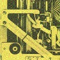
-
-
-
-
-
-
-
-
-
-
-
-
-
-
-
-
-
-
-
-
-
-
- Kurk Dahlke
- Robert Gorl
- Michael Kemmer
- Wolfgang Spelmanns
MUTE RECORDS: DAF0CD (original release 1979 - ATATAK)
#2枚目、このアルバムからガビデルガドが加入します。相変わらず壊れた音がしてますけど、前作よりは構成有って（まだ）聴きやすいかな？
「ガピー」っていう壊れたよなシンセのシーケンスとガレージみたいなドラムの音の中から、ガビが叫んでまわります。ささくれだったよーな変な音。後半はライヴ音源なのかな？こっちはもっと壊れてて、能天気なのが笑えます。(2002.12.30)
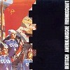
- Osten wahrt am langsten
- essen dann schlafen
- co co pino
- kinderfunk
- nacht arbeit
- ich gebe dir ein stuck von mir
- de panne
- gewalt
- gib's mir
- auf wiedersehen
- das ist liebe
- was ist eine welle
- anzufassen und anzufassen
- volkstanz
- die lustigen stiefel
- die kleinen und die bosen
- die fesche lola
- el basilon
- y la gracia
- Christo Haas (synthesizers)
- Wolfgang Spelmans (guitars)
- Robert Gorl (drums,synthesizers)
- Gabi Delgado-Lopez (voice)
- Conny Plank (engineer)
MUTE RECORDS: 961005-2 (original release 1980)
#VIRGIN時代の3枚（「Alles Ist Gut」「Gold Und Liebe」「Fur Immer」）からのベストです。
メンバーはガビとロバート・ゲールの2人（まぁほとんど、コニー・プランクが3番目のメンバーみたいだけど）。こんぶとよりもぶっといシンセベースに合わせた生ドラム（基本は「ドツタツドツタツ」のリピート）。その上をガビが喘ぎ、囁き、（一応）歌います。音これだけ。
ノイみたいな高揚感の曲も有りますけど、ドイツニューウェーブらしいちょっと暗くてザラザラした質感。エレクトロパンクってな感じ。好きですけど、女の子が一緒にいるときにはかけたくない一品。そういや
ココが面白かった。(2003.1.25)
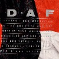
- verschwende diene jugend
- der mussolini (remix by Conny Plank)
- mein herz macht bum
- el que
- ich und die wirklichkeit
- die gotter sind weiss
- der rauber und der prinz
- liebe auf den ersten blick ('88 remix by Joseph Watt)
- im dschungel der liebe
- prinzessin
- grief nach den sternen
- kebabtraume
- die lippe
- als wars das letzte mal
- der mussolini (original version)
- liebe auf den ersten blick (original version)
produced by Conny Plank
- Gabi Delgaldo-Lopez
- Robert Gorl
VIRGIN RECORDS: CDV-2533 (1988)
- Es werde Licht
- Die Peitsche des Lebens
- Anders Sein
- Wenn wir beide auseinandergehn
- Kathedrale der Konzentration
- Alles ist sinnlos
- Alter Mann
- Wir Babies
- Kleiger Junge
- El Cigarro
- Live At The Village Vanguard
- Das Bose kommt auf leisen Sohlen
- Simple Simple
- Erst ich dann Du
- Spiel 77
- Das war son schon
- Vive la vie
- Frank Fenstermacher
- Kurt Dahlke
- Moritz Reichelt
ATATAK: EFA-03750
#えーと3枚目のアルバムにあたるみたいです、何かの映画のサントラみたいです。
1,2分の間抜けーな曲が沢山並んでます、オモチャのテクノポップ。一瞬初期ザッパみたいに聞えるような部分も有ったりします、アヴァンギャルドなんだか脱力なんだか、どこまで本気なんだか判断しかねます。時々見せる愛嬌の有るフレーズがなんとも。(2001.2.12)
- Die Wuste
- Sechs fingen an
- Aufbruch
- Am Grab es Sohnes
...中略...
- Der Grottenolm
- Miletti 1
- Die Grotte der Olme
- Arktischer Dialog
- Miletti 2
- Am Strand
- Frank Fenstermacher
- Kurt Dahlke
- Moritz Reichelt
ATATAK: EFA-03778-2 (original release 1982)